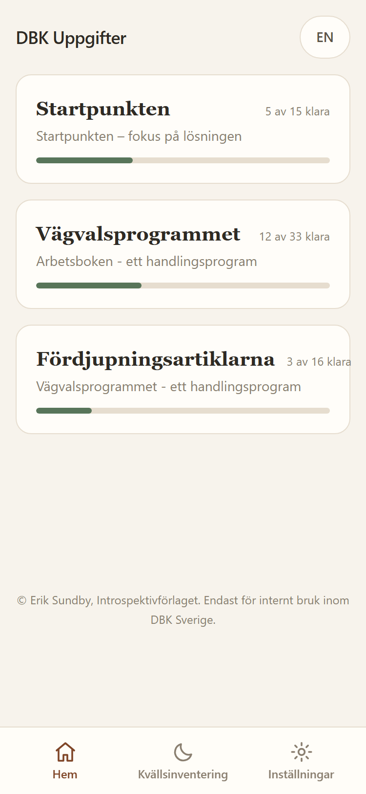
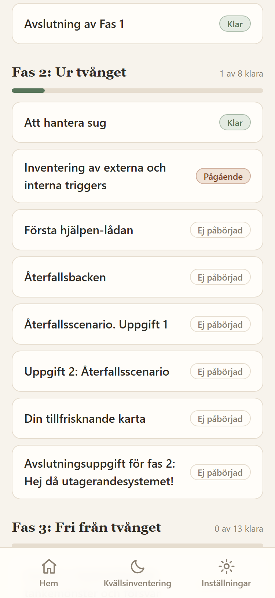
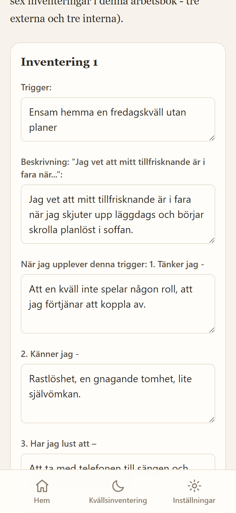
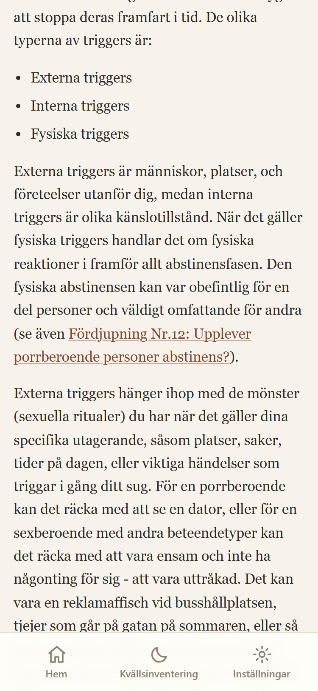
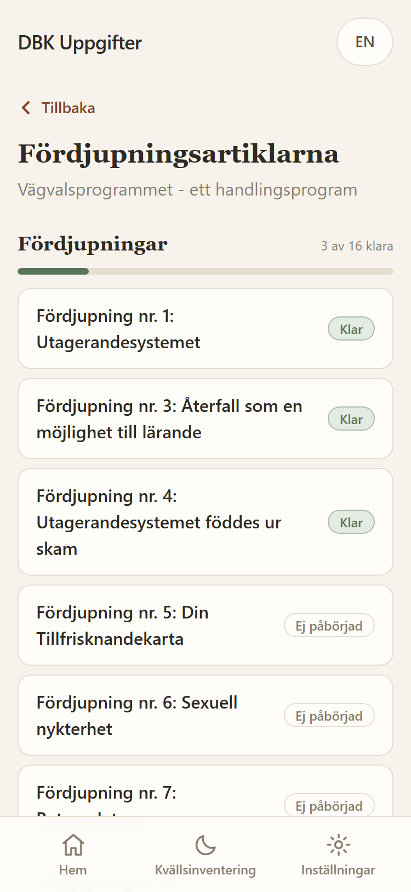
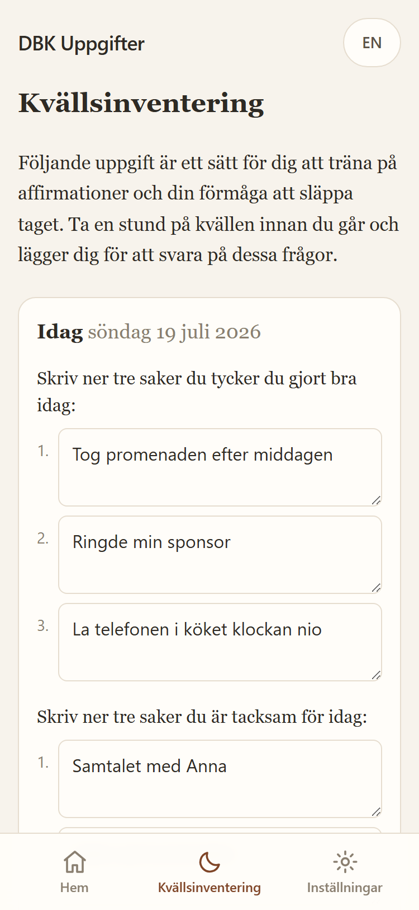
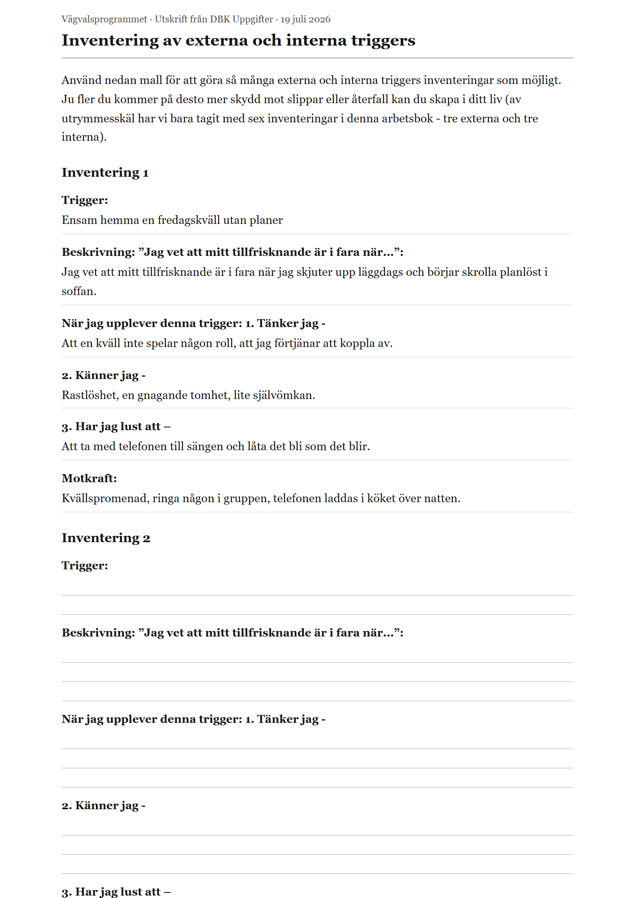
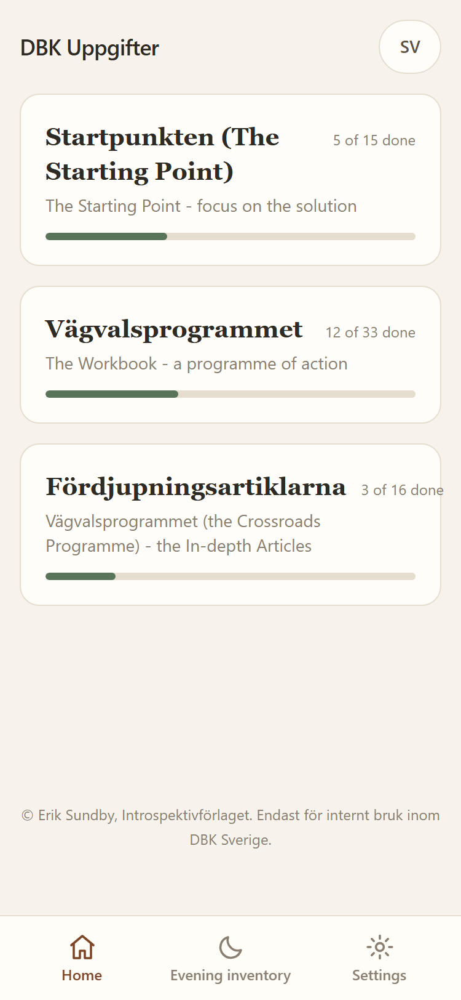
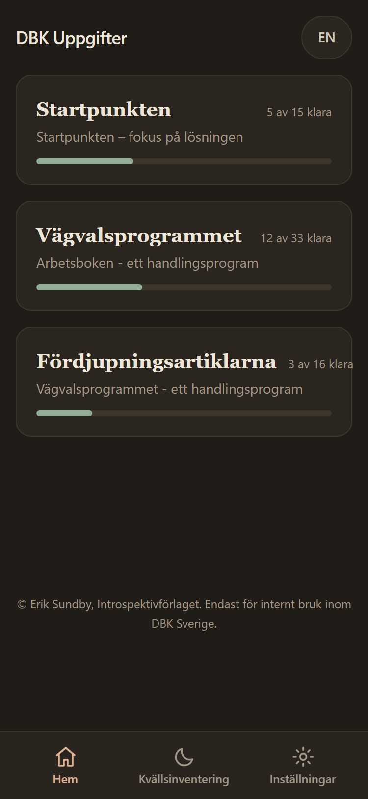

En digital version av arbetsböckerna i Vägvalsprogrammet. Samma uppgifter som i pärmen, men alltid med i telefonen: svaren sparas medan du skriver, och varje uppgift kan skrivas ut för redovisning i grupp precis som förut.
Tre arbetsböcker, uppgift för uppgift: Startpunkten, Vägvalsprogrammet med alla faser, samt de 16 fördjupningsartiklarna.
Allt sparas lokalt på din egen enhet, utan krav på konto. Den som vill kan skapa ett frivilligt synkkonto där svaren krypteras innan de lämnar enheten.

Sex nedslag, från bokmenyn till utskriften. Skärmdumparna visar fiktiv exempeldata.
1 · Boken som meny
Varje bok visar sina uppgifter i den ordning de har i pärmen. Arbetsboken är indelad i faserna Fångad i tvånget, Ur tvånget och Fri från tvånget samt Parprocessen, med förlopp per fas.
Statusen sköter sig själv: en uppgift blir Pågående så fort du börjat skriva och Klar när du markerar den som klar.

2 · Skrivuppgifterna
Skrivfälten följer bokens mallar, här triggersinventeringen med trigger, beskrivning, tanke, känsla, impuls och motkraft. Allt autosparas lokalt efter varje tangenttryckning, och uppe till höger står det stilla lilla kvittot: Sparad.
Inget skickas iväg och inget går förlorat om samtalet ringer mitt i en mening.

3 · Lästexterna
De 16 fördjupningsartiklarna ligger som en egen bok med Läst-markering. När Startpunkten eller Arbetsboken hänvisar till en artikel är hänvisningen en klickbar länk som tar dig rakt in i rätt text, och tillbaka igen.
Lästexter ingår bara där de hör till uppgifterna, precis som i pärmen. Ordalydelsen är bokens egen, även där bokens numrering spretar.


4 · Kvällsinventeringen
Släpp taget-uppgiften har en egen flik i bottenmenyn: tre saker du gjort bra idag, tre saker du är tacksam för och tre saker du behöver hjälp med. Varje kväll blir en egen post, och historiken samlas dag för dag under formuläret.

5 · Redovisningen
Varje uppgift kan skrivas ut eller sparas som PDF för redovisning i grupp. Utskriften har bokens rubriker, dina ifyllda svar och tomma skrivlinjer för det som inte är ifyllt än, så att pappret fungerar även för den som vill fortsätta för hand.

6 · Två språk, två lägen
Språket växlas med knappen uppe till höger eller under Inställningar. Svaren är gemensamma: det du skrivit finns kvar när du byter språk. Utseendet följer systemet eller väljs fast, ljust eller mörkt.
Under Inställningar finns också säkerhetskopieringen (exportera allt som en fil och läs in den igen) samt det frivilliga synkkontot: skriv på datorn hemma, läs upp från mobilen i gruppen. Svaren krypteras på enheten innan de laddas upp och bara den som kan lösenordet kan låsa upp dem.


»Du är viktig. Om du har tankar på att inte orka leva: ring 112 vid akut fara, eller Mind Självmordslinjen på 90101.«
Säkerheten är inbyggd: veckoavstämningen ställer frågan om livslust, och vid ett förhöjt svar visas omedelbart en stödpanel med svenska krisresurser (112, Mind 90101, 1177 samt uppmaningen att kontakta terapeut eller grupp). Panelen kan inte stängas förrän den bekräftats, och stödet ligger kvar så länge svaret är förhöjt.
Svaren sparas i telefonens lokala databas (IndexedDB). Utan konto lämnar ingenting enheten: ingen server, ingen analytics, inga externa anrop.
Med ett synkkonto kan samma svar nås från flera enheter. Allt krypteras på enheten före uppladdning (AES-GCM, lösenordshärledd nyckel); servern lagrar bara oläsbar text och inte ens driftansvarig kan läsa svaren.
Läggs till på hemskärmen direkt från webbläsaren och fungerar helt offline efter första besöket.
Sidan är inte länkad någonstans på sajten och indexeras inte av sökmotorer. Bara den som får länken hittar dit.
Du äger din data: allt kan exporteras som en JSON-fil och läsas in igen, till exempel vid telefonbyte. Rensa all data kräver dubbel bekräftelse.
Varje uppgift har en utskriftsvy med bokens rubriker, dina svar och tomma skrivlinjer, redo för gruppens redovisning.
Öppna appen och välj en bok att börja i. Allt du skriver stannar på din egen enhet och kan raderas när som helst.
Öppna DBK UppgifteriPhone visar ingen egen installationsfråga – stegen görs manuellt via dela-knappen. Installationen är också ett skydd: en app på hemskärmen undantas från Safaris regelbundna rensning av webbplatsdata. Och eftersom all data ligger i appen på enheten gäller: raderas appikonen raderas datan – kom ihåg säkerhetskopian under Inställningar.